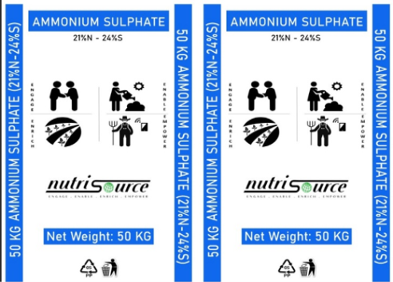
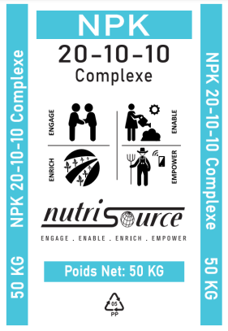
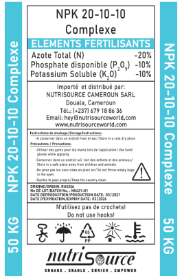
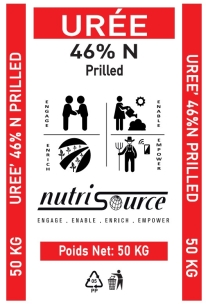
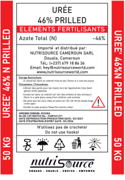

NutriSource Ammonium Sulphate (21%N-24%S)
NSW Ammonium Sulphate comes crystalline and consist of 21% nitrogen and 24% Sulphur in a single bag of fertilizer. AS is one of the broadly applied fertilizers in agriculture and can be used on any type of agricultural crops (from potatoes, oilseeds, cereals to citrus plants) regardless of type of soils used in planting whether acidic or alkaline soils.
Benefits:
• Sulphur - increases oil content of oilseed crops, protein production & activation of metabolic enzymes
• Nitrogen (Ammoniacal form) – ready to available to plant during the life cycle of the plant
Dosage/Recommendation:
• As per crop wise standard recommendation & soil test values
• Recommended for all crops Basel as top-dressing application

NutriSource NPK 20:10:10 Complex
NPK 20-10-10 is a complex fertilizer that is best for seed germination, acceleration of root formation & development, and encouragement of high-quality plant products.
Benefits
Dosage/Recommendation:
• As per crop wise standard recommendation & soil test values
• Recommended for all crops Basel as top-dressing application

NutriSource Urea Prilled (N 46%)
Description:
Urea is a source of Nitrogen, which is an essential nutrient crucial for crop growth and development. Urea is the most important nitrogenous fertilizer because of its high Nitrogen content (46%N).
Benefits:
• Help plants to produce larger flowers, fruits, and vegetables. Since this type of fertilizer allows for plants to grow fast.
• Slow release of nitrogen by extending the urea hydrolysis for the longer period.
• Its Improves growth and yield of the crop.
• Reduces nitrogen losses by leaching and denitrification.
Dosage/Recommendation:
• As per crop wise standard recommendation & soil test values
• Recommended for all crops Basel as top-dressing application